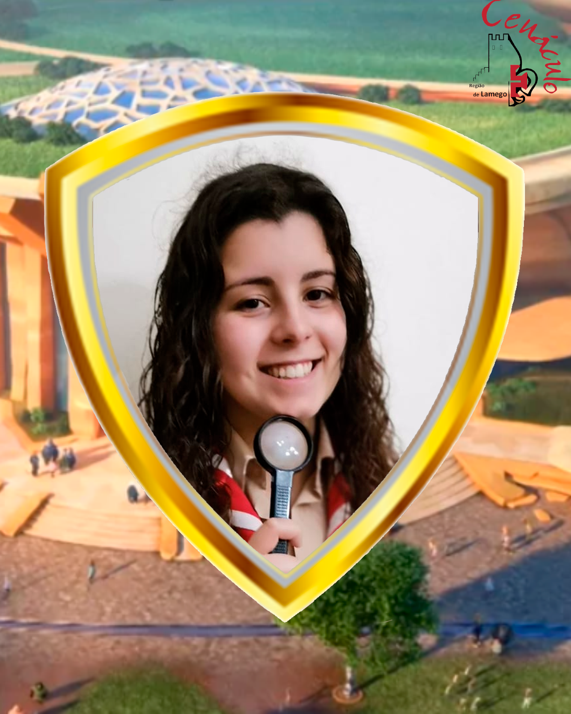

Detetive Gaivota Atenciosa, mais conhecida como Mariana Miguel.
Desde 2008 que faz parte do Agrupamento 280 de Castro Daire e considera-se uma pessoa sempre pronta a ajudar o próximo. Os seus grandes sonhos são fazer voluntariado, se possível fora do país, e viajar pelos vários cantos do mundo para poder conhecer culturas e pessoas diferentes. Para ela o Cenáculo é uma atividade onde se pode marcar a diferença no escutismo, criar laços de amizade e sair desta experiência sempre com a mochila mais completa e repleta de alegria.
“Se não tentares nada de novo não vais falhar”.